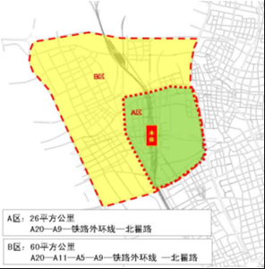
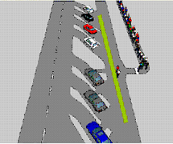
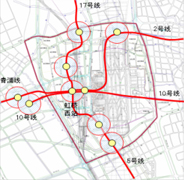

虹桥综合交通枢纽设计及周边地区规划交通评估 ( 2008年04月01日 )
虹桥综合交通枢纽设计及周边地区规划交通评估</STRONG>
完成时间：2007年4月—2007年9月</P>

图1 虹桥枢纽本体、A区、B区、规划范围</FONT>
一、项目背景<BR> 为了对虹桥枢纽设计以及地区相关开发规划进行系统科学评价、及时发现设计与规划方案中存在的各类问题，根据虹桥枢纽建设指挥部的要求，成立了以市建设和交通委、市规划局等为主的虹桥枢纽设计评估领导和工作小组，并组成以市综合交通所为主、市规划院、市市政院、华东院等规划设计单位协助的技术小组。<BR> 市综合交通所在各单位的支持配合下，先后收集并分析了枢纽各类交通设施客运规模、改进了 客流集疏运模型、梳理了各类设计方案和规划方案、评价了关键设施供需和服务水平，并就相关结论与建议与各有关部门进行多次讨论、汇报，最终形成了本次评估成果。<BR>二、评估范围与对象
1、评估范围<BR> 本次评估范围分三个层次：枢纽本体、规划A区、规划B区。<BR> （1）枢纽本体范围：北到青虹路、南至徐泾中路，东到西航站楼，西至SN三路，面积约为1.8平方公里。<BR> （2）规划A区范围：为虹桥枢纽规划区范围，即A20-A9-铁路外环线-北翟路围合范围，总面积约26平方公里。<BR> （3）规划B区范围：为虹桥枢纽规划区外围的青浦、嘉定、闵行等区交界地带，即A20-A11-A5-A9-铁路外环线-北翟路围合范围，总面积约60平方公里。<BR> 2、评估对象<BR> （1）评估方案：枢纽本体设计方案截至2007年7月中旬；枢纽地区规划方案为控制要素规划V3.0版。<BR> （2）评估对象：以枢纽本体设计方案为评估重点，兼顾A区、B区交通规划方案评估。枢纽本体评估对象包括：高架循环道路、停车库、车道边、行人通道、地铁车站、商业开发及其他内容等。<BR>三、评估结论</P>


图2 机场到达层出租车车道边交通仿真 图3 枢纽周边规划地铁网络600米服务范围</FONT>
1、按A级（5分）、B级（3分）、C级（1分）三级5分评价体系，在理想运营情况下，现有虹桥枢纽设计方案综合服务水平基本能达B级。<BR> 2、高铁地下一层大通道行人空间双向客流量达40万人次/日，高峰服务水平不理想，且不能适应节假日客流提前到达滞留现象，建议拓宽地下一层大通道中的行人空间，压缩候车空间。<BR> 3、即使地铁2号线、10号线发挥部分捷运功能，枢纽内部步行距离超过400米以上的换乘客流仍有3万多人次，高铁、磁浮、机场间换乘服务水平不理想，建议增设从东航站楼—西航站楼—西交通广场的捷运系统。<BR> 4、尽管东、西4个社会停车库近、中期能满足一般高峰停车需要，但服务机场、磁浮的东交通广场停车库在2010年极端高峰日已不能满足需要，建议在枢纽外围增设后备、廉价停车库，同步建设、同步投入使用。<BR> 5、高架循环道路流线复杂，高铁到达层出租车车道边供需差距较大，枢纽到达层未设社会客车接客车道边，导致未来交通管理难度增大；建议重视枢纽内外交通标志标线的设置；重视出租车调度系统以及实时交通信息、管理与引导系统的建设;到达层车道边结构留有弹性，便于将来改造。<BR> 6、枢纽弹性开发（新增外来交通量开发）导致东交通中心、磁浮车站电梯功能混杂、数量不足，且弹性开发规模在6万米2以下，对现有设计方案下枢纽平稳运行影响较小，建议枢纽本体弹性开发规模以不超过6万米2为宜，并尽快确认刚性开发规模需求（枢纽本体旅客、员工需要、不新增外来交通量开发）。<BR> 7、A区西部12Km2开发区仅有2轨道站点，虹桥西站来自西部开发区客流高达30万人次/日，站点集散能力紧张，站内、外服务水平不理想，建议虹桥西站优先确保枢纽需要，并且完善A区西部开发区轨道网规划、加密轨道站点，总开发建筑规模控制在650万米2左右；如现有V3.0版轨道线网规划维持不变，建议削减上述开发规模1/3-1/2。<BR> 8、A区西部开发区与B区间联络通道偏少，未来A区边界主要交叉口高峰拥挤，建议按“确保枢纽、A区优先、B区有序”原则，完善A区交通规划，适时开展适应B区开发的交通规划，并适时消除铁路外环线等制约A区、B区联动发展的障碍。<BR>


地址：上海市静安区铜仁路331号11楼 邮编：200040 Web:site:www.scctpi.sh.cn
电话：（021）62477711 62890464 传真：（021）62472386 62892787
 沪ICP备11003425号-4
沪ICP备11003425号-4